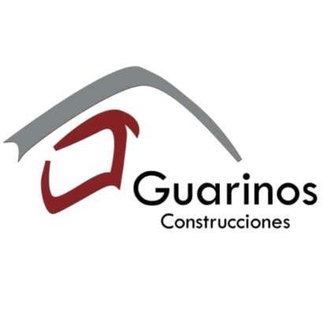

NUESTRAS PROMOCIONES
Nuestra página web tiene la intención de informar a nuestros clientes sobre los servicios que realizamos. Este es un espacio creativo donde nuestra intención es mostrar y compartir nuestra información, lo que hacemos y de lo que somos capaces. El sitio web se presenta al usuario de una manera muy atractiva, utilizando una gama de colores vivos que invitan a navegar por él, además de utilizar una gráfica visualmente muy llamativa, simple y atractiva.
En cuanto a su layout, el sitio presenta una fácil navegación, lo que permite que el visitante lo recorra de forma amigable y lógica. Ofrece distintas secciones que van desde las noticias, secciones dedicadas a informar todo el acontecer de nuestra empresa, fotos, videos y mucho más
Entra a nuestra página para conocernos mejor.
MANTÉNGANSE INFORMADO A TRAVÉS DE LAS REDES SOCIALES
 Conviene tener presente que en el momento actual la presencia de las empresas en los medios y redes sociales ha dejado de ser una opción. Cuando una marca no acredita sus perfiles sociales, genera automáticamente una ligera desconfianza, por lo que de igual forma y por ausencia, el no estar presente en internet o las redes sociales, puede no beneficiar a nuestra reputación.
Esta podría ser una de las primeras desventajas a lo que sumar a la evidente pérdida de competitividad y desconfianza asociada a esta “ausencia”. Resulta obvio decir que la clave del crecimiento de los negocios aumenta cuanto también lo hace el número de clientes o el compromiso de estos hacia la propia marca o empresa. Un aspecto que gracias a las redes sociales puede verse fortalecido.
Cerrar las puertas de Internet y las redes sociales es hoy un freno para nuestra empresa de tal magnitud.
Conviene tener presente que en el momento actual la presencia de las empresas en los medios y redes sociales ha dejado de ser una opción. Cuando una marca no acredita sus perfiles sociales, genera automáticamente una ligera desconfianza, por lo que de igual forma y por ausencia, el no estar presente en internet o las redes sociales, puede no beneficiar a nuestra reputación.
Esta podría ser una de las primeras desventajas a lo que sumar a la evidente pérdida de competitividad y desconfianza asociada a esta “ausencia”. Resulta obvio decir que la clave del crecimiento de los negocios aumenta cuanto también lo hace el número de clientes o el compromiso de estos hacia la propia marca o empresa. Un aspecto que gracias a las redes sociales puede verse fortalecido.
Cerrar las puertas de Internet y las redes sociales es hoy un freno para nuestra empresa de tal magnitud.